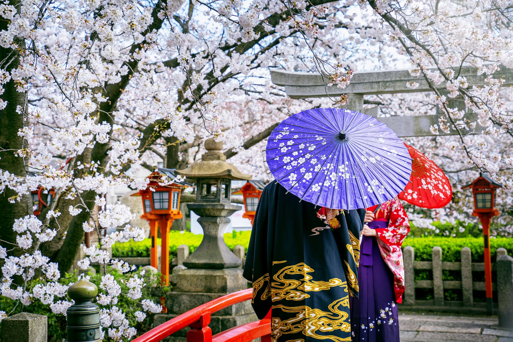
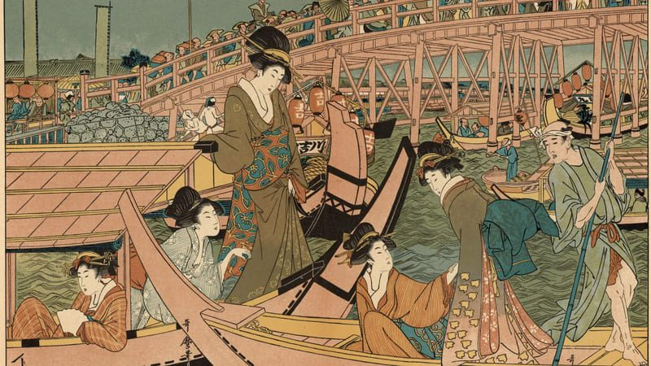
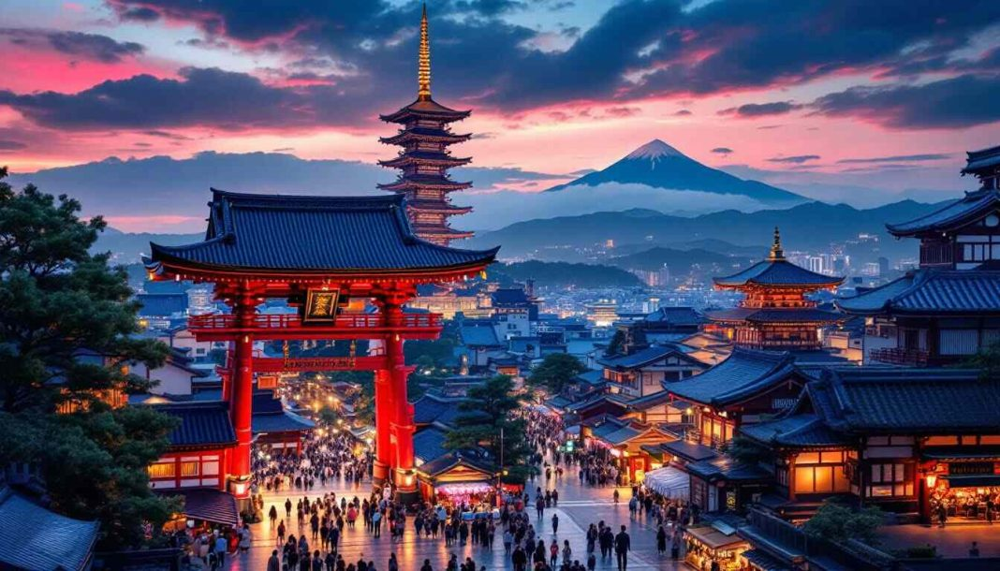

Um país onde tradição e tecnologia se encontram. Conheça sua cultura, história, paisagens e principais culinárias.
Explorar
Conheça as tradições, culinária e manifestações culturais japonesas.

Descubra acontecimentos importantes que marcaram a formação do Japão.

Explore cidades, templos, paisagens e alguns dos principais pontos turísticos.
O Japão e um pais que desperta a curiosidade do mundo inteiro. Ao mesmo tempo em que preserva os costumes antigo. também e um dos lideres nas areas de tecnologia, industria e cultura pop quando se fala do Japão não e so sobre samurais, imperadores e guerras. É também observar como um arquepélogo isolado no leste da Ásia contruiu uma sociedade complexa, organizada e influente. O país passou por momentos dificeis, como guerras civis, isolamento politico, bombardeios e recontrução após a Segunda Guerra Mundial. Mesmo com todas essas dificuldades o pais conseguiu se erguer novamente e se tornou uma das maiores potencias economicas do mundo.Esse caminho foi magnifico de se falar sobre.